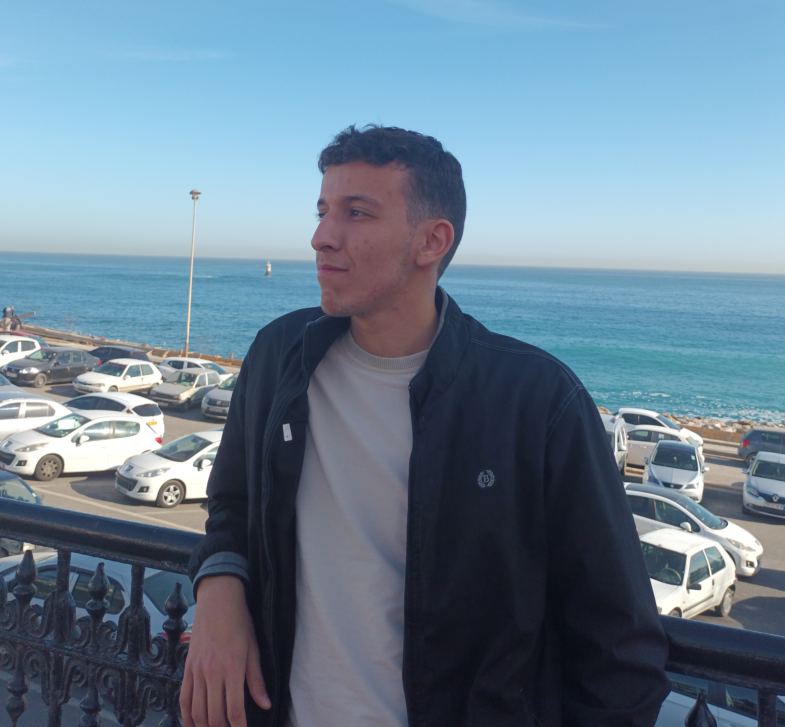

TIHAMI Mohammed Hicham

Summary
Hardworking and dedicated computer science student with a passion for Web development and
design. Eager to learn and constantly seeking new opportunities to enhance skills and knowledge. Committed
to delivering high-quality work and consistently exceeding expectations.
Education
- 4th year computer science student (computer system field)-Higher School of Computer Science ESI -ex INI
- National test for joining engineering schools, ESI (ex INI)
- Bacalaureate degree graduated with 91.11% Science Division, Free candidate
Projects
- Tadawaw, Tadawaw was a 4 team project for a best startup idea competition held by
the ministry Of Higher Education and Scientific Research
Tadawaw is a cutting-edge health app that bridges the gap between doctors and
patients. By leveraging video calls and chat functionality, Its innovative AIpowered
skin scanning feature accurately assesses various conditions, offering
patients precise guidance on seeking medical help.
- Pommy, An Android game comprises a collection of educational games for children
focused on nutrition and home safety.
Pommy was an academic project undertaken at ESi, completed
collaboratively by a team of 6 members over a span of 3 months.
- PetTalk, a mobile app that allows users to communicate with their pets via futuristic
technology
it was a Project for a hackathon called HACKINI held by ESI science club
the idea was to develop somothing useless today but very useful in the future.
Skills
- HTML
- CSS
- JAVASCRIPT
- UI/UX
Languages
- Arabic : ⭐⭐⭐⭐⭐
- English : ⭐⭐⭐⭐
- Arabic : ⭐⭐⭐
Awards and Certifications
Other